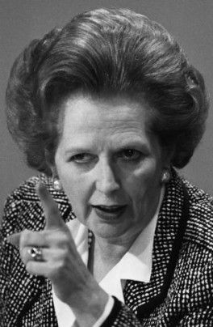
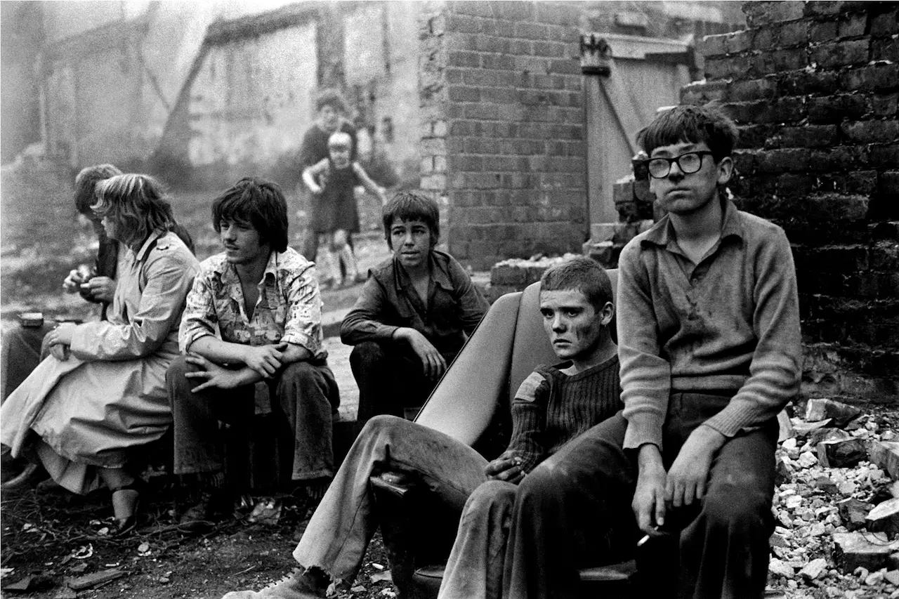
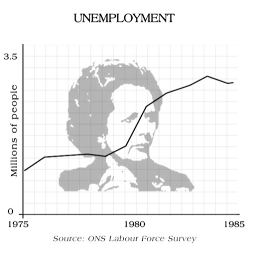

By A. Ord
Margaret Thatcher was the prime minister of England from 1979 until she stepped down from office in 1990. Despite having left the house of commons, she still held a seat in the house of lords, as she was a baroness. Her leadership of England is considered by a large number of people to have been cruel and harmful and many of her policies were very controversial. At face value, Thatcher's policies attempted to lower inflation through privatisation and free market capitalism. These policies were all grouped into a type of conservatism, now known as Thatcherism.

Magaret Thatcher was a heavily right leaning conservative with policies that harmed a large group of minorities. She not only supported the retention of capital punishment and was against the relaxation of divorce laws, but throughout her time in office, her socio-economic policies completely destroyed the quality of life for the working class. She gradually took away power from the trade unions and instilled policies to make protesting harder by outlawing solidarity strikes and picketing. She also introduced the homophibic legislation, Section 28 of the Local Government Act 1988. This prohibited counsels from funding the portrayal of homosexual relationships in all forms of media and in the education of children.
Thatcher was also responsible for The Poll Tax which most likely directly led to her downfall. The Poll Tax changed the way tax was calculated from being based on property value, to the number of people living in the property. It took the effects of taxation off of the rich and forced it onto poorer families who often had many generations living under the same roof. This single bit of legislation led to some of the worst and most brutal rioting in British history. Margaret Thatcher may have been elected democratically, but the working class under Thatcherism were arguably no more worse off than under a fascist regime.
Life under Thatcher was stark and dismal. Her rise to power was followed by a brutal widening of social inequality. The proportion of pensioners living below the poverty line rose from 13%-43% and child poverty more than doubled. Whereas the rich saw their taxes drop from 83%-40%. Housing prices skyrocketed under Thatcher, following the Housing Act of 1980. This allowed the tenants of council homes to buy the properties, often below the market value. This caused a housing boom, resulting in house prices inflating to over 30% between 1982 and 1989. Meanwhile, rents rose for the remaining council tenants. By 1991 rent was 55% higher, relative to the average wage, than it had been ten years ago.
Social Housing wasn't the only national resource that Thatcher's government privatised. Shares were sold in numerous national commodities including water, gas, electricity and telecommunications. This privatisation was done under the guise that it would give the people more power, but instead it had the inverse effect as a majority of the shares were bought by big corporations who hiked up the prices of the commodities.
 From the series Youth Unemployment © Ella Murtha
When Thatcher rose to power, unemployment was at 5.7%. The introduction of spending cuts to education, housing and industry, along with increased interest rates saw this figure rise sharply. Unemployment passed 3 million by 1982 and stood at 13%, the highest it had been since the 1930s. Thatcher's battle with the unions, privatisation and the decline in manufacturing investment, resulted in mass welfare dependency. The ramifications of Thatcher' s policies devastated communities in the north and significantly widened the divide between the rich and the poor.

Two Tone comes out of two very distinct cultures being pushed together and realising they form a community from shared experience. Both of these groups were poorer, working class people that were heavily impacted by Thatcher's socio-economic policies. Many of the songs that come out of Two Tone are about the struggles that the communities and individuals face, along with stepping over the boundaries of racial stereotypes. They effectively took the upbeat elements of Ska and Reggae and fused them with the power and energy of Punk.
The Specials were a Two Tone band formed in Coventry, 1977. Coventry, being the industrial heartland of England, was one of the most heavily impacted cities by Thatcher's policies. One of their breakthrough tracks, Ghost Town (1981), was so heavily influential because it perfectly encapsulated the mood of huge sections of the UK. This is because huge groups of people could relate the sentiment of the song to their own experiences.
The Specials - Ghost TownIn the second verse of Ghost Town, several points are made about the state of the country. It asks why youth must fight themselves and how the government is “leaving the youth on the shelf”. Many people in lower class families felt that there was no future ahead of them as class divides were becoming even greater and more disproportionate. The song also states that there are no jobs in the country, talking about the mass unemployment caused by Margaret Thatcher's policies.
Whilst The Specials were one of the more politicised bands, mostly due this song, Two Tone bands across the country shared these sentiments as everyone could relate to the struggles. To quote Ana Tijoux “If you think about The Specials, they are a response to a very specific moment of crisis: political, social and economic. When the rage becomes the songs”.
Links